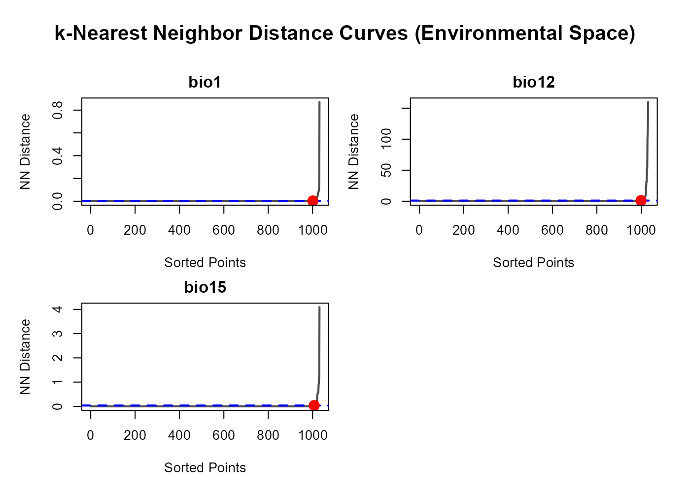
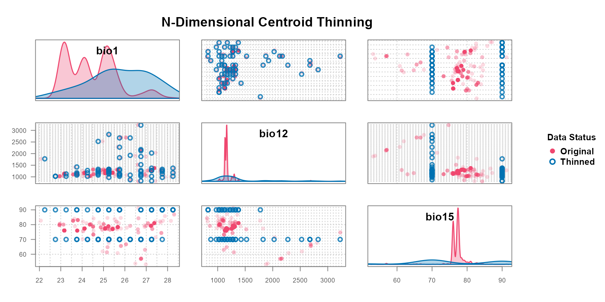
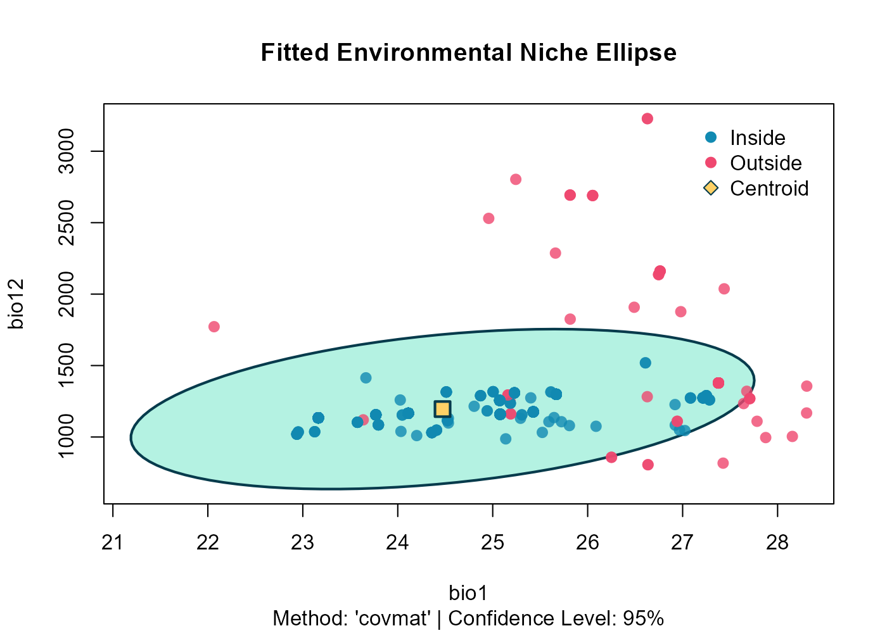
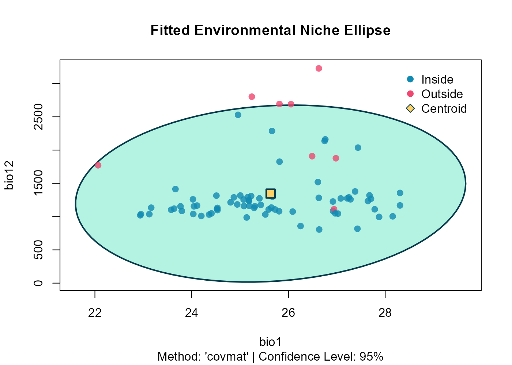

Day 2b — Environmental thinning with bean
Source:vignettes/Day2b_Bean_Processing.Rmd
Day2b_Bean_Processing.RmdOverview
Workshop navigation — part 3 of 4 in the ENM-Thailand 2026 workshop.
- Day 1 — Virtual species with nicheR. Build an ellipsoid niche by hand and project it.
- Day 2a — Downloading the workshop data. Fetch Thailand, WorldClim and GBIF Sambar records.
- Day 2b (this page) — Environmental thinning with bean. Reduce E-space sampling bias before fitting a real niche.
- Day 3 — Temporally-explicit SDMs with TemporalModelR. Pair each occurrence with the environment it experienced.
bean reduces sampling bias by thinning occurrence points
that are clustered in environmental space (E-space)
instead of in geographic space. The intuition: most field campaigns
oversample easily reachable environments. Thinning per environmental
“pod” produces a more even coverage of the species’ niche, and therefore
a less biased fundamental-niche estimate.
Today we will:
- Load the cleaned GBIF occurrences for Rusa unicolor in
Thailand (written by
Day2a_Data_Download.Rmd). - Prepare them for
beanand visualise the bias in E-space. - Find an objective environmental grid resolution.
- Thin the points with both methods (
thin_env_ndstochastic,thin_env_centerdeterministic). - Fit an ellipsoid niche on the thinned points and map suitability back to G-space.
Prerequisite: knit
Day2a_Data_Download.Rmdfirst sodata/processed/is populated.
Install and load packages
cran_pkgs <- c(
"terra",
"sf",
"dplyr",
"readr",
"rmarkdown",
"knitr",
"remotes"
)
to_install <- cran_pkgs[!cran_pkgs %in% rownames(installed.packages())]
if (length(to_install)) install.packages(to_install, dependencies = TRUE)
# ---- bean from GitHub ------------------------------------------------------
if (!requireNamespace("bean", quietly = TRUE)) {
remotes::install_github("paanwaris/bean", upgrade = "never")
}
bioclim <- rast("data/processed/bioclim/bioclim_thailand.tif")
thailand <- st_read("data/processed/boundary/thailand_boundary.gpkg", quiet = TRUE)
sambar <- read_csv("data/processed/gbif/sambar_thailand.csv",
show_col_types = FALSE)
head(sambar)## # A tibble: 6 × 7
## species decimalLongitude decimalLatitude year month basisOfRecord gbifID
## <chr> <dbl> <dbl> <dbl> <dbl> <chr> <dbl>
## 1 Rusa unicol… 101. 14.4 2026 1 HUMAN_OBSERV… 6.13e9
## 2 Rusa unicol… 101. 14.4 2026 1 HUMAN_OBSERV… 6.13e9
## 3 Rusa unicol… 101. 14.5 2026 1 HUMAN_OBSERV… 6.13e9
## 4 Rusa unicol… 101. 14.4 2026 1 HUMAN_OBSERV… 6.13e9
## 5 Rusa unicol… 101. 14.5 2026 1 HUMAN_OBSERV… 6.13e9
## 6 Rusa unicol… 101. 14.5 2026 1 HUMAN_OBSERV… 6.13e9For a clean ellipsoid we use two informative bioclim variables. These also map well onto Sambar deer habitat (warm, wet evergreen and mixed forests).
Step 1 — Prepare occurrences
prepare_bean() drops rows with missing coordinates,
extracts environmental values at each occurrence, and returns a tidy
data frame ready for thinning.
sambar_xy <- sambar %>%
dplyr::select(longitude = decimalLongitude,
latitude = decimalLatitude)
prepped <- prepare_bean(data = sambar_xy,
env_rasters = env,
longitude = "longitude",
latitude = "latitude",
transform = "none")
nrow(prepped)## [1] 1031Look at the raw points in G-space and in E-space side by side. Notice
the clustering in E-space — that’s the bias bean will
reduce.
par(mfrow = c(1, 2))
plot(st_geometry(thailand), border = "grey20", main = "G-space")
points(prepped[, c("longitude", "latitude")], pch = 21, bg = "tomato",
col = "white", cex = 0.7)
plot(prepped$bio1, prepped$bio12,
xlab = "BIO1 — annual mean T (°C)", ylab = "BIO12 — annual precip. (mm)",
pch = 19, col = adjustcolor("tomato", alpha.f = 0.5),
main = "E-space")
Step 2 — Choose an objective environmental resolution
find_env_resolution() walks a grid of candidate
resolutions, looks at the average nearest-neighbour distance among
points after thinning, and identifies the “elbow” where dense artificial
clustering ends.
res_search <- find_env_resolution(data = prepped,
env_vars = c("bio1", "bio12", "bio15"))## Calculating nearest neighbor environmental distances and detecting elbows...
plot(res_search)
chosen_res <- res_search$suggested_resolution
chosen_res## bio1 bio12 bio15
## 0.002405167 1.000000000 0.034934998Step 3 — Apply thinning
bean ships two thinning strategies; we run both for
comparison.
# Stochastic: randomly retain one occurrence per "pod"
thin_nd <- thin_env_nd(data = prepped,
env_vars = c("bio1", "bio12", "bio15"),
grid_resolution = chosen_res)
# Deterministic: replace each occupied pod with its centre
thin_center <- thin_env_center(data = prepped,
env_vars = c("bio1", "bio12", "bio15"),
grid_resolution = c(0.5, 50, 20))
thin_nd## --- Bean Stochastic Thinning Results ---
##
## Thinned 1031 original points to 80 points.
## This represents a retention of 7.8% of the data.
##
## --------------------------------------
thin_center## --- Bean Deterministic Thinning Results ---
##
## Thinned 1031 original points to 66 unique grid cell centers.
## This represents a retention of 6.4% of the data.
##
## --------------------------------------
plot_bean(
original_data = prepped,
thinned_object = thin_nd,
env_vars = c("bio1", "bio12", "bio15")
)
plot_bean(
original_data = prepped,
thinned_object = thin_center,
env_vars = c("bio1", "bio12", "bio15")
)
Step 4 — Fit the ellipsoid niche
fit_ellipsoid() formalises the niche by fitting a
bivariate (or multivariate) ellipsoid around the thinned points. We
compare the ellipsoid fit on raw vs. thinned data.
ell_raw <- fit_ellipsoid(prepped,
env_vars = c("bio1", "bio12", "bio15"),
method = "covmat",
level = 0.95)
ell_thinned <- fit_ellipsoid(thin_nd$thinned_data,
env_vars = c("bio1", "bio12", "bio15"),
method = "covmat",
level = 0.95)
plot(ell_raw, dims = c(1, 2))

Step 5 — Project the niche back to G-space
pred_raw <- predict(ell_raw, env)
pred_thinned <- predict(ell_thinned, env)
par(mfrow = c(1, 2))
plot(pred_raw$suitability, main = "Suitability — raw data")
plot(pred_thinned$suitability, main = "Suitability — thinned niche")
dir.create("outputs", showWarnings = FALSE)
terra::writeRaster(pred_thinned,
"outputs/Day2_suitability_sambar_thinned.tif",
overwrite = TRUE)
saveRDS(ell_thinned, "outputs/Day2_ellipsoid_thinned.rds")Wrap-up
Take-homes:
- Spatial bias in occurrence data propagates into E-space as dense clusters.
-
beanthins in E-space so that the fitted niche is not pulled toward the densest sampled environments. - The two thinning methods (
thin_env_ndvs.thin_env_center) trade randomness for reproducibility — pick one and stick with it for a given analysis.